This week is all about taking what we learned last week and applying it to circuit simulations to complete simple tasks. We also learn to code Arduinos.
In this video we learned a few basic skills. First we learned the most basic way to set up a Arduino to a breadbord. With that, we were able to connect a diode bulb (LED) and have it light up without exploding. We also got to experiment with how a pushbutton can be used to connect and close a circuit. Finally, we learned how a potentiometer can be used as a sort of variable strength resistor.
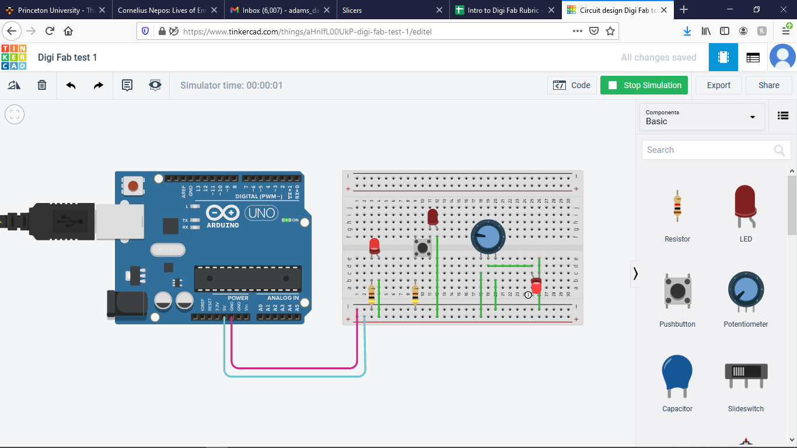In this video we began to learn basic Arduino coding. First we learned the basic uses for setup() and loop(). Then we learned how to define constant integers. From there we learned how to do basic arithmatic with those integers. We also learned how to use Serial.print and Serial.println. Lastly, we learned how to use if/else functions.
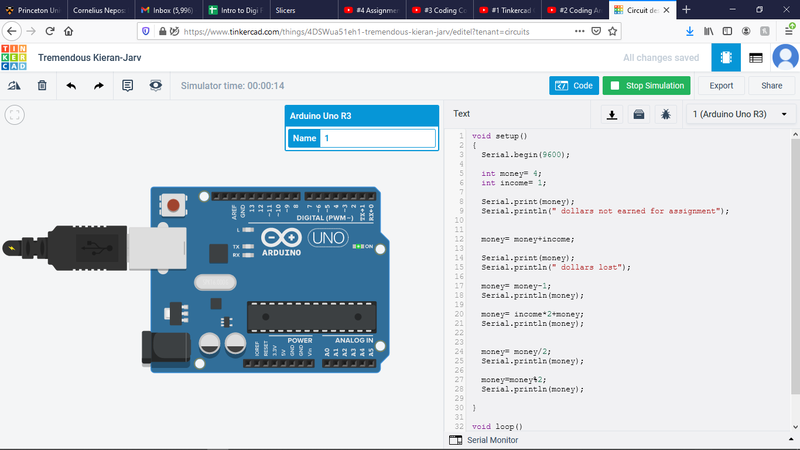 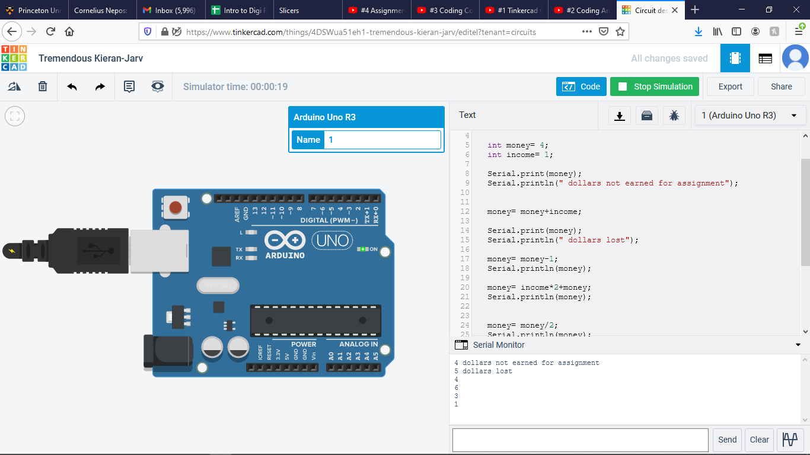 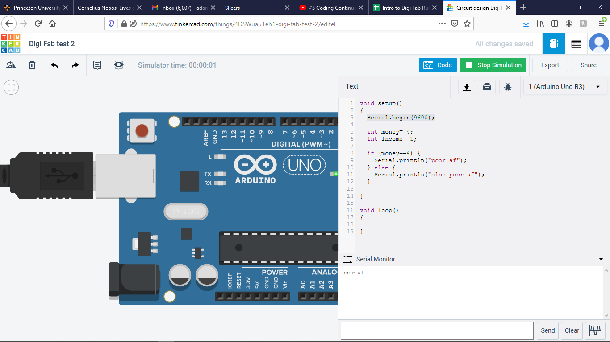In this video we learned the basic parts of the Adruino and some of the ways to use them in our coding. In particular how to use the Digitals to read pin mode inputs and outputs. This allowed us to write some loop functions for turning on the light only when the arduino reads the button as being pushed, not just because the button is completing a circuit directly connected to a light.
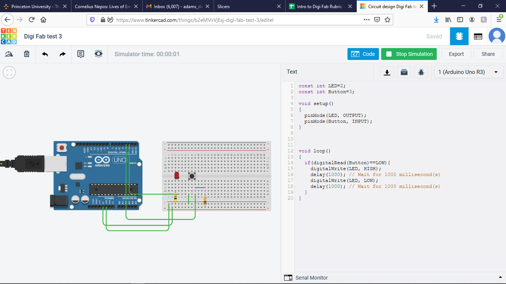Below can be seen a quick demo of some of the basic coding we learned in video 2.
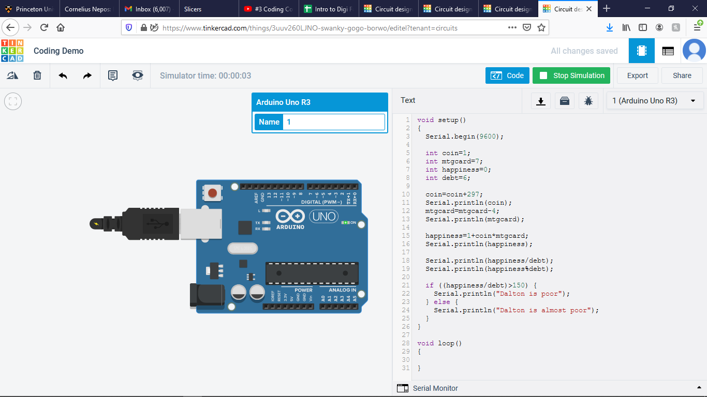 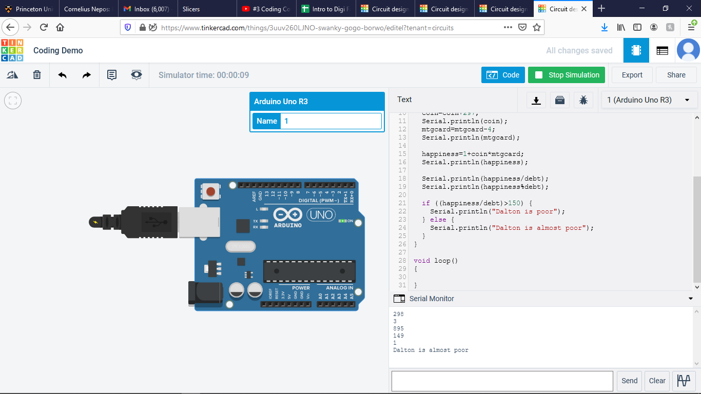The results of my completed Project 1 can be seen below.
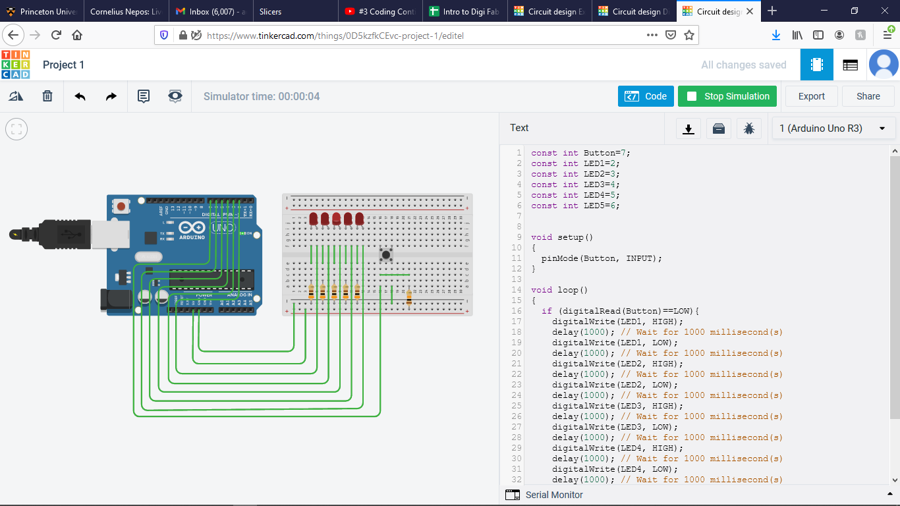 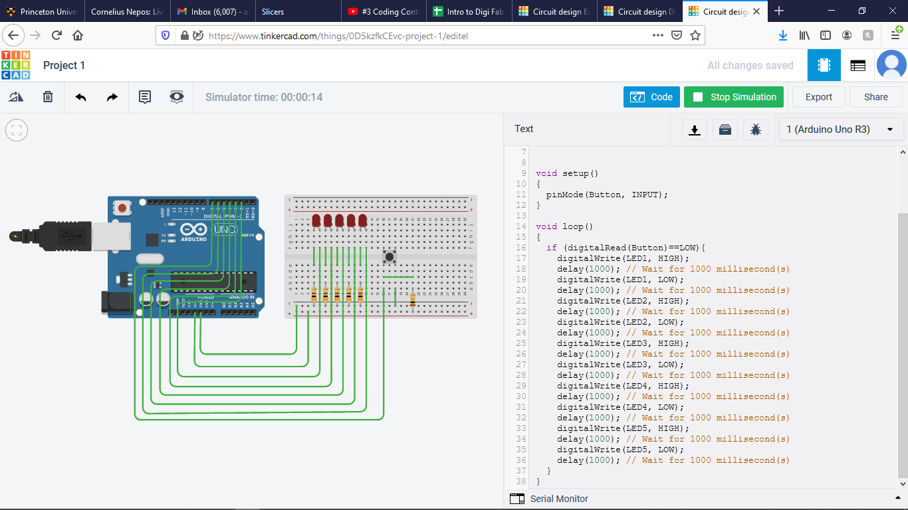The results of my completed Project 2 can be seen below.
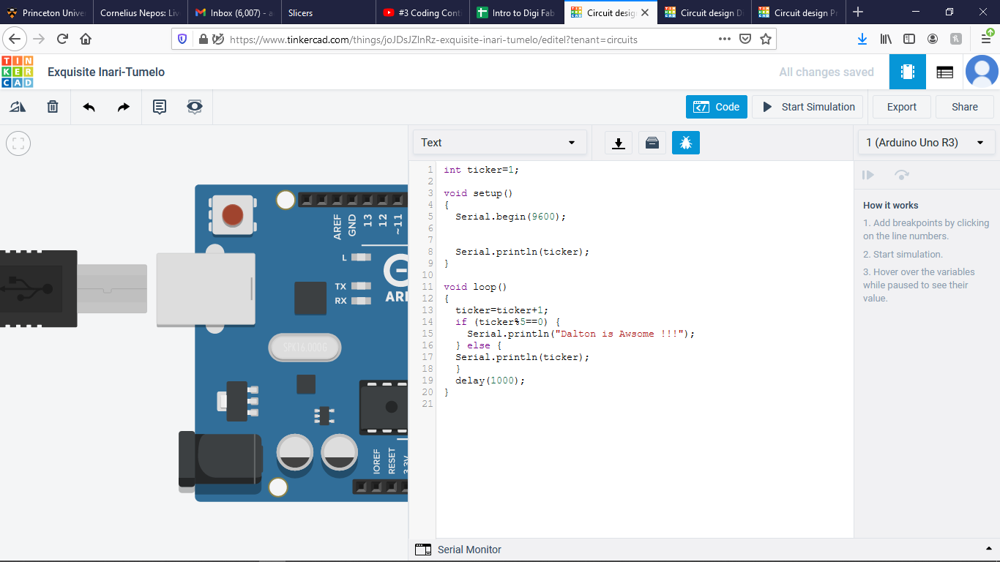 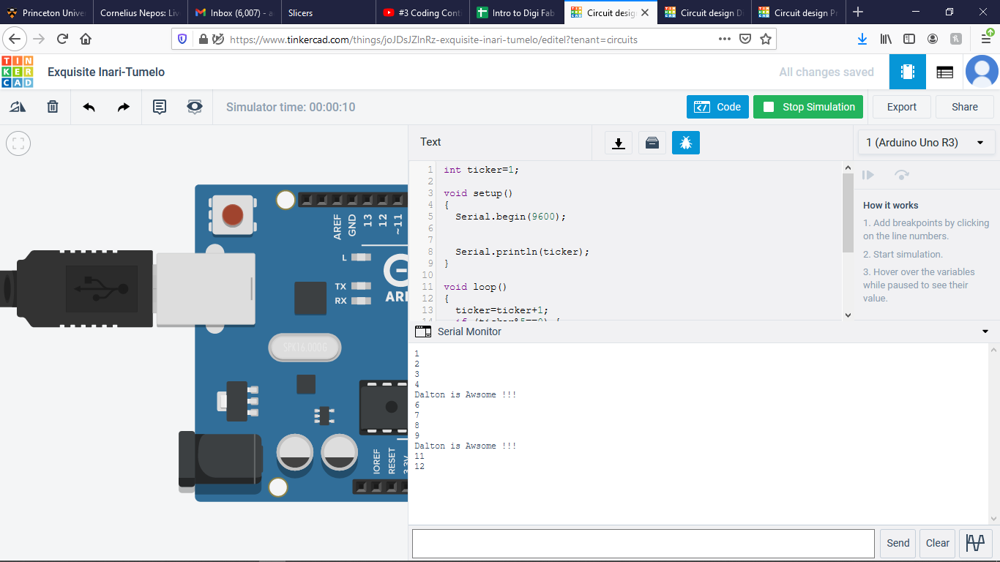